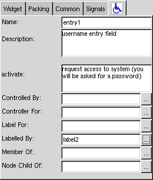

back
next
Glade support
Gnome 2 branch of Glade supports ATK:
support for accessible-name, description
support for relations and action descriptions


![[Making Applications Accessible]](foot-less-banner-wide.gif)